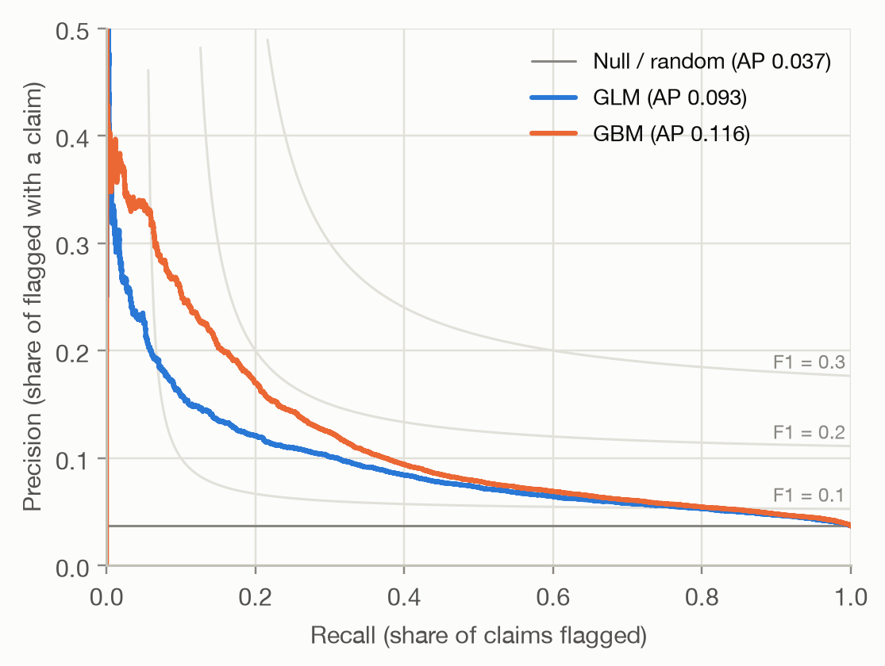
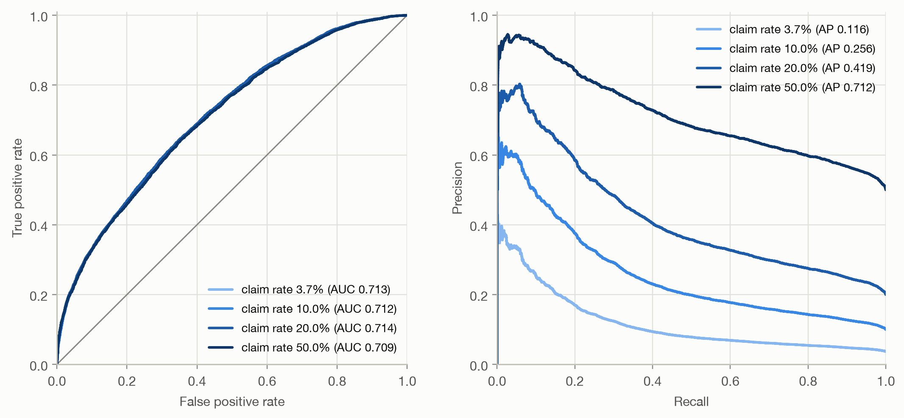

Code
ax = plot_pr(y, {m: b[m] for m in models}, ylim=0.5)
Question answered: of the cases the model flags, how many are real positives, and how many of the real positives does it find?
The ROC curve measures false alarms relative to all negatives: the false positive rate is FP / (FP + TN). With 96.3% of policies without a claim, that denominator is huge, and a small false positive rate can hide a large number of false alarms:
At a threshold of 0.1, the GBM has a false positive rate of only 3.3%: a point far to the left on the ROC curve. But that is 5,412 false alarms against 1,180 correctly flagged claims, so only 18% of the flagged policies actually have a claim.
Precision relates false alarms to true hits instead of to all negatives, so it shows directly what happens among the flagged cases. That makes it the natural metric when positives are rare and attention goes to the cases the model flags: fraud checks, claim reviews, medical screening, marketing campaigns.
The PR curve uses the same threshold sweep as the ROC curve, but plots
Starting from a very high threshold, only the highest-risk policies are flagged: recall is small and, for a good model, precision is high. Lowering the threshold raises recall and, usually, lowers precision, until everything is flagged: recall 1 and precision equal to the overall claim rate.
ax = plot_pr(y, {m: b[m] for m in models}, ylim=0.5)
Three things differ from a ROC plot:
The gray curves connect points of equal F1 score, the harmonic mean of precision and recall. The best F1 the GBM reaches is 0.185 (at threshold 0.10), against 0.153 for the GLM. Low values like these are typical for rare events. F1 is only a convenient summary: it weights precision and recall equally, which rarely matches the actual costs of misses and false alarms.
Average precision (AP) condenses the PR curve into one number: the precision at each threshold, weighted by how much recall that threshold adds,
\[ \text{AP} = \sum_k (R_k - R_{k-1})\, P_k, \]
where \(R_k\) and \(P_k\) are recall and precision after lowering the threshold past the \(k\)-th distinct score. The Null model’s AP equals the claim rate.
Using the same ten toy policies as on the ROC page:
toy_y = np.array([1, 1, 0, 1, 0, 0, 1, 0, 0, 0])
toy_p = np.array([0.9, 0.8, 0.7, 0.6, 0.55, 0.5, 0.4, 0.3, 0.2, 0.1])
toy = pr_points(toy_y, toy_p)
toy["AP contribution"] = np.diff(np.r_[0, toy["recall"]]) * toy["precision"]
toy.round(3)| threshold | recall | precision | AP contribution | |
|---|---|---|---|---|
| 0 | 0.90 | 0.25 | 1.000 | 0.250 |
| 1 | 0.80 | 0.50 | 1.000 | 0.250 |
| 2 | 0.70 | 0.50 | 0.667 | 0.000 |
| 3 | 0.60 | 0.75 | 0.750 | 0.188 |
| 4 | 0.55 | 0.75 | 0.600 | 0.000 |
| 5 | 0.50 | 0.75 | 0.500 | 0.000 |
| 6 | 0.40 | 1.00 | 0.571 | 0.143 |
| 7 | 0.30 | 1.00 | 0.500 | 0.000 |
| 8 | 0.20 | 1.00 | 0.444 | 0.000 |
| 9 | 0.10 | 1.00 | 0.400 | 0.000 |
Only the thresholds that add a claim contribute, each with weight 1/4. The AP is 0.830: on average, when the threshold passes a policy with a claim, 83% of the flagged policies have a claim.
Computing the area under the PR curve with the trapezoidal rule (as for ROC) connects the points with straight lines. Between two PR points, precision does not change linearly, so the result is off, in either direction, and it also depends on which starting point is assumed at recall 0. On the toy example it gives 0.811 instead of 0.830. With many distinct scores the gap shrinks, but AP is the well-defined summary: average_precision_score in scikit-learn, whereas sklearn.metrics.auc on a PR curve is the trapezoidal version.
pd.DataFrame({
"AUC": auc,
"Average precision": ap,
"AP / claim rate": {m: ap[m] / rate for m in models},
}).round(3)| AUC | Average precision | AP / claim rate | |
|---|---|---|---|
| GLM | 0.694 | 0.093 | 2.534 |
| GBM | 0.713 | 0.116 | 3.152 |
The GBM’s AUC is 0.018 higher than the GLM’s, a modest 3%. Its average precision is 24% higher. Both metrics summarize the same ranking, but they weight it differently:
The GBM’s advantage is concentrated in its highest-risk predictions, so AP shows it more clearly.
In practice, capacity is often fixed: ‘we can review 5% of policies’. Then the relevant question is how good the top 5% of the ranking is. Two measures answer it:
shares = [0.01, 0.05, 0.10, 0.20]
top = pd.concat(
{m: pd.DataFrame({f"top {s:.0%}": top_share_metrics(y, b[m], s) for s in shares}).T for m in models},
axis=1,
)
top.round(3)| GLM | GBM | |||||
|---|---|---|---|---|---|---|
| precision | recall | lift | precision | recall | lift | |
| top 1% | 0.206 | 0.056 | 5.609 | 0.282 | 0.077 | 7.677 |
| top 5% | 0.128 | 0.173 | 3.467 | 0.158 | 0.214 | 4.284 |
| top 10% | 0.104 | 0.283 | 2.832 | 0.117 | 0.318 | 3.175 |
| top 20% | 0.080 | 0.432 | 2.162 | 0.084 | 0.455 | 2.277 |
Flagging the top 1%, the GBM finds 7.7 times more claims than random selection would, the GLM 5.6 times. As the flagged share grows, precision falls towards the claim rate and lift towards 1. Showing lift for every decile of the ranking gives a lift chart, covered for pure premium on the lift chart page.
Precision has a property that matters a lot in practice: unlike the ROC curve, it depends on the base rate. At any threshold,
\[ \text{precision} = \frac{\pi \cdot \text{TPR}}{\pi \cdot \text{TPR} + (1 - \pi) \cdot \text{FPR}}, \]
where \(\pi\) is the share of positives. TPR and FPR are properties of the model alone. Precision mixes them with \(\pi\). To see the effect, we keep all policies with a claim and randomly drop policies without a claim until the claim rate reaches 10%, 20% and 50%. The model and its ranking don’t change.
rng = np.random.default_rng(0)
pos, neg = np.flatnonzero(y == 1), np.flatnonzero(y == 0)
samples = {}
for target in (rate, 0.10, 0.20, 0.50):
n_neg = min(len(neg), int(len(pos) * (1 - target) / target))
idx = np.r_[pos, rng.choice(neg, n_neg, replace=False)]
samples[f"{target:.1%}"] = (y.to_numpy()[idx], b["GBM"].to_numpy()[idx])ramp = ["#86b6ef", "#3987e5", "#1c5cab", "#0d366b"] # light to dark: rising claim rate
fig, axes = plt.subplots(1, 2, figsize=(10, 4.6))
axes[0].plot([0, 1], [0, 1], color=MUTED, linewidth=1)
for (label, (ys, ps)), color in zip(samples.items(), ramp):
roc, pr = roc_points(ys, ps), pr_points(ys, ps)
axes[0].plot(roc["fpr"], roc["tpr"], color=color, label=f"claim rate {label} (AUC {auc_rank(ys, ps):.3f})")
axes[1].plot(np.r_[0, pr["recall"]], np.r_[pr["precision"].iloc[0], pr["precision"]],
drawstyle="steps-pre", color=color, label=f"claim rate {label} (AP {average_precision(ys, ps):.3f})")
axes[0].set(xlabel="False positive rate", ylabel="True positive rate", xlim=(0, 1), ylim=(0, 1.01), aspect="equal")
axes[1].set(xlabel="Recall", ylabel="Precision", xlim=(0, 1), ylim=(0, 1.01))
axes[0].legend(loc="lower right")
axes[1].legend(loc="upper right")
fig.tight_layout()
The ROC curves lie on top of each other: AUC doesn’t change. The PR curves rise with the claim rate, and AP climbs from 0.12 to 0.71. Same model, same ranking, different AP. This has practical consequences:
The two curves contain the same information (given the base rate, every ROC point maps to exactly one PR point), but they emphasize different things:
| ROC / AUC | PR / AP | |
|---|---|---|
| Focus | the whole ranking, both classes | the top of the ranking, positive class |
| False alarms measured relative to | all negatives | true hits |
| Depends on base rate | no | yes |
| Random baseline | 0.5 | base rate |
| Good for | comparing rankings across populations; when both error types matter | rare positives where only the flagged cases are acted on |
It’s often claimed that AP is ‘the right metric for imbalanced data’. That’s too simple. Imbalance alone doesn’t make AUC wrong. Recent work (McDermott et al., 2024) shows that AP favors improvements at the top of the ranking and can favor models that work best for the subgroups with the highest base rates. Choose by the question: use AUC when the whole ranking matters, AP or precision at k% when only the top of the ranking is acted on, and report the base rate with any precision-based metric.